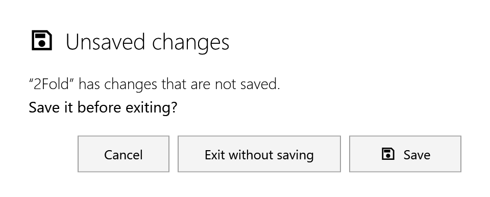

Solutions
A solution file (.fr) holds everything about one part in one cell, so you can open it again exactly as it was.
It contains:
-
the cell, with its gripper, TCP and Home;
-
the part, with a copy of its drawing, so the .fr still opens when the drawing file has moved;
-
the stack and the deposit place;
-
the cycle as you edited it, and the cycle as FRobot planned it, so Reset All still works;
-
where the cycle was playing.
It does not keep the planner chosen in Recompute, or a continuous run: the saved cycle is a single cycle.
Saving
File ▸ Save saves the solution.
-
The first time, the Save Solution dialog asks where to save it. It suggests the name from the bottom bar.
-
After that, Save writes to the same file without asking. That includes a solution you opened, the samples too: use Save As… to keep the original.
-
After a rename in the bottom bar, Save writes <new name>.fr in the same folder and leaves the old file as it was. If a file with the new name exists, FRobot asks … already exists. Replace it? A solution never saved gets the Save dialog, with the new name filled in.
File ▸ Save As… always asks where to save.
A toast confirms Solution saved: 2Fold.fr.
|
Note
|
Before a solution exists, Save and Save As… save the cell as a cell config instead: see Cell configs. |
Opening
There are three ways:
-
File ▸ Open… or open on the rail, choosing a .fr file;
-
one of the two recent files at the bottom of the File menu (for this session);
-
double-click a .fr file in Explorer.
The solution opens exactly as it was saved, with its edits; nothing is planned again. The Workflow window opens with it (or closes, if it was already open).
|
Note
|
FRobot registers the .fr file type for you each time it starts, so .fr files show the FRobot icon. Every double-click starts a new FRobot window. |
If a solution can’t be opened, a toast says why:
| Message | Meaning |
|---|---|
Open solution failed: … |
The file can’t be read: it is damaged or not an FRobot solution |
Not a solution file |
The file reads, but holds no cell |
Solution’s part could not be restored (DXF missing?) |
The part could not be rebuilt from the file |
… files are no longer supported — open a solution (.fr) or a cell config (.curl) |
The file type can’t be opened (for example an old .fcell) |
A solution that fails to open still adds a block to the bottom bar; close it with its ✕.
Several solutions at once
You can keep several solutions open, each on its own screen. Opening another solution or drawing, or creating a new cell, opens a new screen when the current one holds something. A cell config loads into the current screen instead.
The bottom bar has a block for each open solution (pictured in The screen):
-
The active solution is the block with the part name, thickness and robot.
-
Another solution: click its block to switch to it. It comes back exactly as you left it, without planning again.
-
Closing: the ✕ before a block’s name closes that solution. Closing the active one shows its neighbour; closing the last one leaves the empty start screen.
Unsaved changes
When you close a solution with changes that are not saved, or close FRobot, it asks first:

| Button | What it does |
|---|---|
Save (Save all for several) |
Saves, then closes |
Don’t save (Exit without saving when closing FRobot) |
Closes without saving |
Cancel |
Stays where you are |
Esc, Enter, the round ✕ and a click outside the card all mean Cancel.
These count as changes:
-
a new or changed solution;
-
a new cell with stations in it;
-
a new name typed in the bottom bar.
These do not count:
-
playing, scrubbing and resetting the simulation;
-
a drawing that is open but not yet made 3D;
-
changes to a cell opened from a cell config, while it has no part. Save the cell config yourself: see Cell configs.